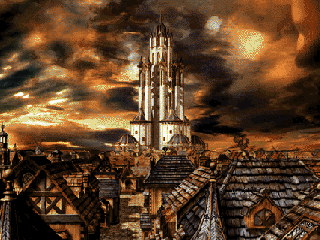

게임소개
히어로소프트의 RPG Maker 2000 판타지 RPG.
수억 년 동안 천사와 몬스터가 싸웠고, 그 휴전이 끝나 가고 있다. 주인공은 한쪽 신을 따라 태어나 시작의 섬에서 출발해, 길드장 일지에서 끊긴 이야기 "로스트사가"를 찾아간다.

히어로소프트의 RPG Maker 2000 판타지 RPG.
수억 년 동안 천사와 몬스터가 싸웠고, 그 휴전이 끝나 가고 있다. 주인공은 한쪽 신을 따라 태어나 시작의 섬에서 출발해, 길드장 일지에서 끊긴 이야기 "로스트사가"를 찾아간다.